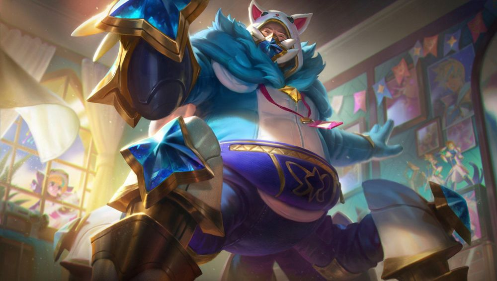
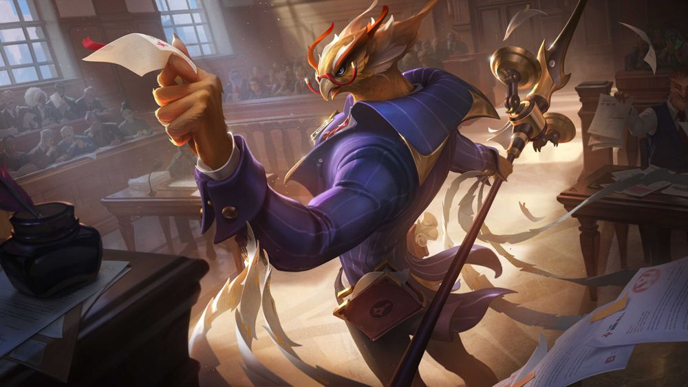

.png)
.png)
Tìm hiểu sâu về trang phục: tướng nào được nhận trang phục, với chủ đề gì và tại sao.
Đội Ngũ Phát Triển | 100 pc nuggets, Riot Hylia, Danika Li, Julian Futanto 22/8/2024
Xin chào các bạn, chúng tôi là đội thiết kế Trang Phục! Chúng tôi đã nhận được rất nhiều câu hỏi của người chơi về cách chúng tôi lựa chọn chủ đề, các tướng cho chủ đề đó và lý do. Thế nên hôm nay, chúng tôi sẽ trả lời những câu hỏi đó và nói rõ về các triết lý hiện tại của mình.
Phát triển trang phục là một cán cân luôn thay đổi. Đây là một quá trình lặp đi lặp lại, và chúng tôi rất biết ơn phản hồi của các bạn vì nó không chỉ giúp chúng tôi tìm được điểm thích hợp cho mỗi chủ đề, tướng, bậc và loại người chơi, mà còn bởi vì điểm thích hợp này luôn thay đổi theo thời gian. Chúng tôi kỳ vọng sẽ có những thành công và thất bại, nhưng quan trọng là chúng tôi muốn các bạn hiểu rằng chúng tôi luôn nỗ lực trong hành trình đó. Hãy cùng nói về cách mà chúng tôi suy nghĩ về trang phục ở thời điểm hiện tại.
Trong vài năm gần đây, chúng tôi đã tập trung vào việc ra mắt trang phục cho tất cả các tướng, để tránh trường hợp "bỏ rơi 1000 ngày" xảy ra lần nữa. Vậy nên nỗ lực của chúng tôi hướng đến kết quả và hiệu năng để đảm bảo không có vị tướng nào quá lâu chưa có trang phục mới. Việc này đã được thực hiện khá tốt, nhưng vô tình, chúng tôi bắt đầu tập trung vào việc ra mắt trang phục, và không chú ý nhiều đến giả tưởng gốc của vị tướng đó. Hiện tại, chúng tôi đã điều chỉnh lại và cố gắng để tướng được tỏa sáng trong trang phục của họ.
Chúng tôi gọi hướng tiếp cận này là "tướng là ưu tiên". Có nghĩa là chúng tôi muốn xem xét giả tưởng của một tướng một cách tổng thể để tìm ra những thứ còn thiếu trong dàn trang phục hiện tại, từ đó tạo ra trang phục mới đem đến sự mới mẻ cho cả dân chuyên và người chơi thông thường.
Điều này cũng có nghĩa là thay vì chỉ hỏi "Tướng nào hợp với chủ đề này?", chúng tôi cũng sẽ đặt ra câu hỏi "Điều gì đang còn thiếu đối với vị tướng này? Sự bổ sung nào sẽ tạo ra sự thú vị cho họ?"
Đây là một sự khác biệt quan trọng vì khi chúng tôi ra quyết định dựa trên chủ đề, Caitlyn, Lux và Ezreal thường sẽ xuất hiện vì họ phù hợp với nhiều chủ đề, do ngoại hình không quá đặc biệt và dễ dàng hòa nhập với bất kỳ chủ đề nào. Rất dễ để thêm Ezreal vào một chủ đề nào đó, vì về cơ bản Ezreal chỉ là một anh chàng không dùng vũ khí, thay vì một gã Urgot bự con, đáng sợ và nhiều chân như cua.

Nhưng bằng việc xem xét tổng thể tướng và danh sách trang phục hiện tại, chúng tôi có thể tìm ra những điểm thú vị mà vị tướng đó đang còn thiếu. Tuy vậy, có những lúc chúng tôi phải đảo ngược chủ đề cơ bản của một vị tướng để tạo ra một thứ thực sự hấp dẫn. Các trang phục của Urgot thường mang tính máu me ghê rợn, với hình ảnh gã mình cua đáng sợ. Nhưng Urgot Cosplay Vệ Binh thì... hoàn toàn ngược lại, và là một sự bổ sung ngốc nghếch, vui nhộn cho danh sách trang phục của hắn.
Vì vậy với hướng tiếp cận "tướng là ưu tiên", chúng tôi có thể xác định cả những tình huống nghiêm túc để làm nổi bật giả tưởng của tướng hơn nữa, hoặc những cơ hội vui nhộn, dở hơi đại loại như "Nếu Azir là một luật sư đầu chim thì sao nhỉ?"

Như thường lệ, hãy vui lòng nhiệt tình chia sẻ ý kiến của bạn với chúng tôi. Chúng tôi muốn những trang phục bạn mua phải thú vị, vui nhộn và đáng tiền. Chúng tôi rất háo hức với một số ý tưởng đang ấp ủ, và rất nóng lòng được biết cảm nghĩ của các bạn trong những tháng ngày tới đây. Cảm ơn vì đã đọc và hẹn gặp lại các bạn lần tới!